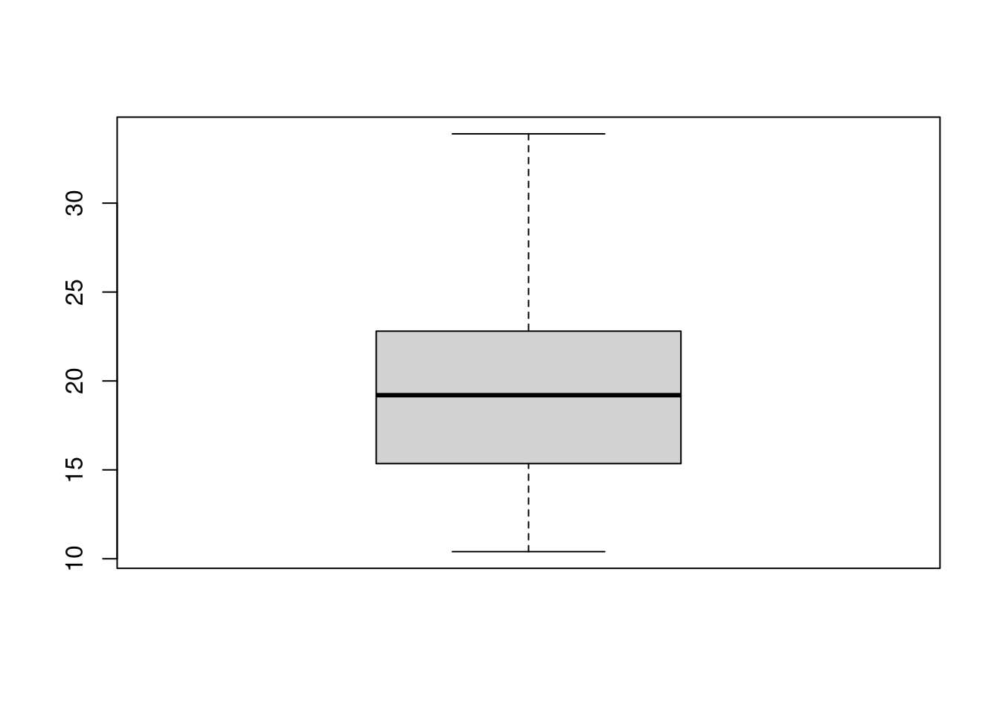
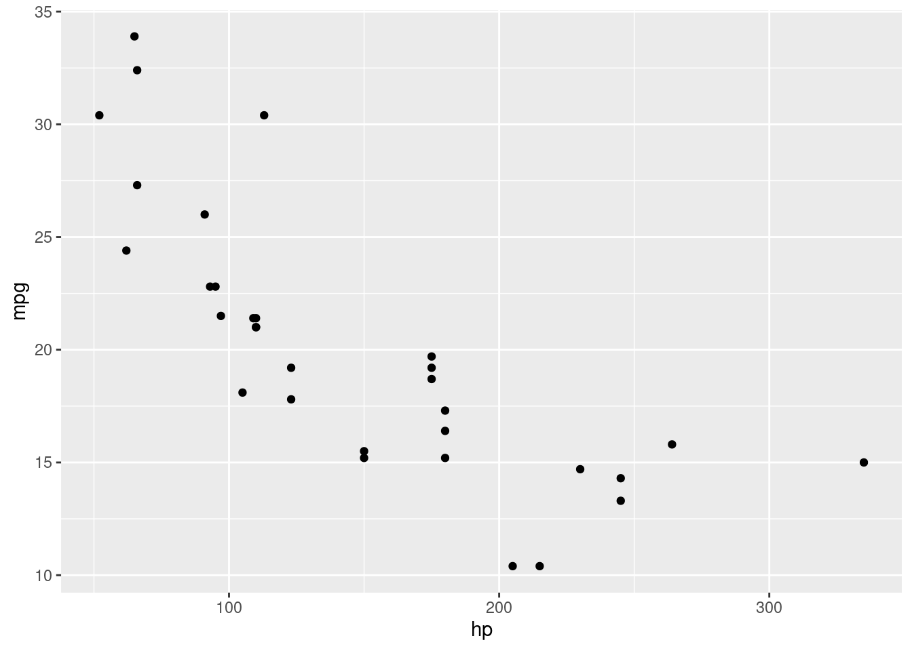
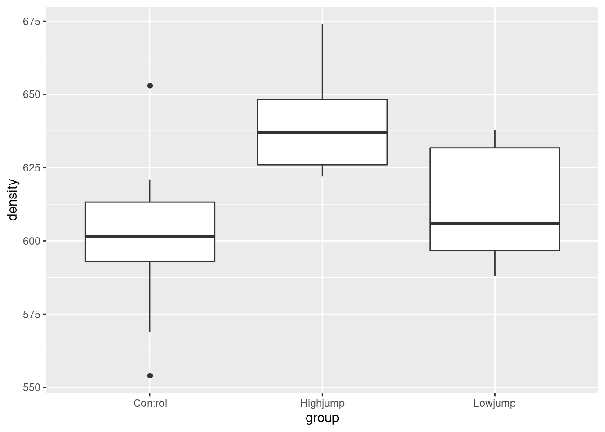

Chapter 1 Getting used to R and R Studio
In this chapter, my solutions are in with the problems.
## Warning: package 'MASS' was built under R version 4.0.5## Warning: package 'nnet' was built under R version 4.0.5## Warning: package 'lme4' was built under R version 4.0.5## Warning: package 'Matrix' was built under R version 4.0.51.1 Running R Studio on Jupyterhub
This is described as a “proof-of-concept” way of running R Studio online (for free, for anyone with a UTorID and password). This is a good way to get started with R Studio. It looks the same as any other version of R Studio.
- To get started, in your web browser, visit https://jupyter.utoronto.ca/hub/login. You should see something that looks like this:
Jupyterhub login screen
If you don’t see this, you might see this instead:
which looks almost the same, but lacks the option to start R Studio. If that happens to you, you can log in and immediately log out again, which should get you back to the first place.
- On the line where it says “After logging in, start…” make sure you have clicked next to (on the left of) R Studio, so that the circle is blue, and then click the orange “Log in to start”. Log in with your UTorID and password. This is about what you should see after you have done that:
A new instance of R Studio
On the left is where you will (later) have code to run. Top right is the Console, where you can run quick disposable bits of code, and bottom right you see any files you may happen to have (probably only one at this stage).
- To test what you have, click on the top right Console window, type
library(tidyverse)and press Enter. You might see R Studio offering you some suggestions as you type. If you see what you want, you can select it rather than typing the whole thing.
Here’s what you should see now. You can ignore the error messages from Jupyter:
After running library(tidyverse)
Still in the Console window, type mtcars and press Enter again. This will bring up one of R’s built-in datasets:
mtcars data
This is information about a number of cars, as featured in Motor Trends magazine. If you can see this, you are good to go. A good thing to tackle next is the problem called Getting Started, which uses the same dataset.
1.2 Getting an R Studio Cloud account
Follow these steps to get an R Studio Cloud account.
- Point your web browser at link. (If you already have R and R Studio installed on your computer, you can use that instead, throughout the course; just do part (d) of this question. Any references to R Studio Cloud in this assignment also apply to R Studio on your computer.)
Solution
You should see this:
 . Click
on Get Started. You might instead see the screen in the next part.
. Click
on Get Started. You might instead see the screen in the next part.
\(\blacksquare\)
- Choose an account to use.
Solution
Here’s what you should see now:

If you’re happy with using your Google account, click that
button. You will probably have to enter your Google password. (If
you are doing this on your own computer, you might not have to do
that.) If you have a GitHub account and you want to use
that, same principle.
You can also use an email address as your login to R Studio
Cloud. (You can use any e-mail address; I’m not checking.) Enter
it in the top box, and enter a password to use with R Studio Cloud
in the second. (This does not have to be, and indeed probably
should not be, the same as your email password.) Below that,
enter your first and last name. This will appear at the top right
of the screen when you are logged in. Then click Sign Up. After
that, you will have to make a unique account name (which
you actually never use, but which
rstudio.cloud uses to
name your files).
After that, you are automatically logged in.
\(\blacksquare\)
- Take a look around, and create a new Project. Give the new project any name you like.
Solution
This is what you see now:

Click on the blue New Project button to create a new Project. (A project is a self-contained piece of work, like for example an assignment.) You will see the words “Loading Project” and spinning circles for a few moments. Then you see this:

To give your project a name, click at the top where it says Untitled Project and type a name like Assignment 0 into the box.
\(\blacksquare\)
- Before we get to work, look for the blue
>at the bottom left. Click next to it to get a flashing cursor, and then type what you see here (in blue):

Then press Enter.
Solution
This lets it install a bunch of things. It may take some
time. If you are watching it, look out for lines beginning with
g++, which are C++ code that needs to be compiled. This is
the end of what I had. Look out for the word DONE near the bottom:

\(\blacksquare\)
- Not for now, but for later: if you are on a lab computer, you should probably log out when you are done. To do that, find your name at the top right. Click on it, and two things should pop out to the right: Profile and Log Out. Select Log Out. You should be returned to one of the screens you began with, possibly the Welcome to R Studio Cloud one. To log back in, now or next time, look for Log In at the top right. Click it, to get this:

and then you can log in with your email and password, or Google or Github IDs, whichever you used. Now we can get down to some actual work.
1.3 Getting started
This question is to get you started using R.
- Start R Studio Cloud, or the R Studio on Jupyter, in some project. (If you started up a new project in the previous question and are still logged in, use that; if not, create a new project with File, New Project, and New Directory. Then select New Project and give it a name. Click Create Project. This will give you an empty workspace to start from.)
Solution
You ought to see something like this. I have a dark blue background here, which you probably do not.

It won’t look exactly like that (for example, the background will probably be white) but there should be one thing on the left half, and at the top right it’ll say “Environment is empty”. Extra: if you want to tweak things, select Tools (at the top of the screen) and from it Global Options, then click Appearance. You can make the text bigger or smaller via Editor Font Size, and choose a different colour scheme by picking one of the Editor Themes (which previews on the right). My favourite is Tomorrow Night Blue. Click Apply or OK when you have found something you like. (I spend a lot of time in R Studio, and I like having a dark background to be easier on my eyes.)
\(\blacksquare\)
- We’re going to do some stuff in R here, just to get used to it. First, make an R Notebook by selecting File, New File and R Notebook.
Solution
The first time, you’ll be invited to “install some packages” to make the Notebook thing work. Let it do that by clicking Yes. After that, you’ll have this:

Find the Insert and Run buttons along the top of the R Notebook window. We’ll be using them shortly. (The template notebook may or may not be maximized; it doesn’t matter either way. You might see all four panes or as few as one. If you want to control that, select View at the top, then Panes, then either Show All Panes or Zoom Source, as you prefer. In the menus, you’ll also see keyboard shortcuts for these, which you might find worth learning.)
\(\blacksquare\)
- Change the title to something of your choosing. Then go down to line 5, click on the Insert button and select R. You should see a “code chunk” appear at line 5, which we are going to use in a moment.
Solution
Something like this:

\(\blacksquare\)
- Type the line of code shown below into the chunk in the R Notebook:
mtcars
Solution
What this will do: get hold of a built-in data set with information about some different models of car, and display it.

In approximately five seconds, you’ll be demonstrating that for yourself.
\(\blacksquare\)
- Run this command. To do that, look at the top right of your code chunk block (shaded in a slightly different colour). You should see a gear symbol, a down arrow and a green “play button”. Click the play button. This will run the code, and show the output below the code chunk.
Solution
Here’s what I get (yours will be the same).

This is a rectangular array of rows and columns, with
individuals in rows and variables in columns, known as a
“data frame”. When you display a data frame in an R Notebook, you see
10 rows and as many columns as will fit on the screen. At the
bottom, it says how many rows and columns there are altogether
(here 32 rows and 11 columns), and which ones are being
displayed. You can see more rows by clicking on Next, and if
there are more columns, you’ll see a little arrow next to the
rightmost column (as here next to am) that you can
click on to see more columns. Try it and see. Or if you want to
go to a particular collection of rows, click one of the numbers
between Previous and Next: 1 is rows 1–10, 2 is rows 11–20,
and so on.
The column on the left without a header (containing the names of
the cars) is called “row names”. These have a funny kind of
status, kind of a column and kind of not a column; usually, if
we need to use the names, we have to put them in a column first.
In future solutions, rather than showing you a screenshot,
expect me to show you something like this:
## # A tibble: 32 x 11
## mpg cyl disp hp drat wt qsec vs am gear carb
## <dbl> <dbl> <dbl> <dbl> <dbl> <dbl> <dbl> <dbl> <dbl> <dbl> <dbl>
## 1 21 6 160 110 3.9 2.62 16.5 0 1 4 4
## 2 21 6 160 110 3.9 2.88 17.0 0 1 4 4
## 3 22.8 4 108 93 3.85 2.32 18.6 1 1 4 1
## 4 21.4 6 258 110 3.08 3.22 19.4 1 0 3 1
## 5 18.7 8 360 175 3.15 3.44 17.0 0 0 3 2
## 6 18.1 6 225 105 2.76 3.46 20.2 1 0 3 1
## 7 14.3 8 360 245 3.21 3.57 15.8 0 0 3 4
## 8 24.4 4 147. 62 3.69 3.19 20 1 0 4 2
## 9 22.8 4 141. 95 3.92 3.15 22.9 1 0 4 2
## 10 19.2 6 168. 123 3.92 3.44 18.3 1 0 4 4
## # … with 22 more rowsThe top bit is the code, the bottom bit with the ## the
output. In this kind of display, you only see the first ten rows (by
default).
If you don’t see the “play button”, make sure that what you have really is a code chunk. (I often accidentally delete one of the special characters above or below the code chunk). If you can’t figure it out, delete this code chunk and make a new one. Sometimes R Studio gets confused.
On the code chunk, the other symbols are the settings for this chunk (you have the choice to display or not display the code or the output or to not actually run the code). The second one, the down arrow, runs all the chunks prior to this one (but not this one).
The output has its own little buttons. The first one pops the output out into its own window; the second one shows or hides the output, and the third one deletes the output (so that you have to run the chunk again to get it back). Experiment. You can’t do much damage here.
\(\blacksquare\)
- Something a little more interesting:
summaryobtains a summary of whatever you feed it (the five-number summary plus the mean for numerical variables). Obtain this for our data frame. To do this, create a new code chunk below the previous one, typesummary(mtcars)into the code chunk, and run it.
Solution
This is what you should see:

or the other way:
## mpg cyl disp hp drat wt qsec vs
## Min. :10.40 Min. :4.000 Min. : 71.1 Min. : 52.0 Min. :2.760 Min. :1.513 Min. :14.50 Min. :0.0000
## 1st Qu.:15.43 1st Qu.:4.000 1st Qu.:120.8 1st Qu.: 96.5 1st Qu.:3.080 1st Qu.:2.581 1st Qu.:16.89 1st Qu.:0.0000
## Median :19.20 Median :6.000 Median :196.3 Median :123.0 Median :3.695 Median :3.325 Median :17.71 Median :0.0000
## Mean :20.09 Mean :6.188 Mean :230.7 Mean :146.7 Mean :3.597 Mean :3.217 Mean :17.85 Mean :0.4375
## 3rd Qu.:22.80 3rd Qu.:8.000 3rd Qu.:326.0 3rd Qu.:180.0 3rd Qu.:3.920 3rd Qu.:3.610 3rd Qu.:18.90 3rd Qu.:1.0000
## Max. :33.90 Max. :8.000 Max. :472.0 Max. :335.0 Max. :4.930 Max. :5.424 Max. :22.90 Max. :1.0000
## am gear carb
## Min. :0.0000 Min. :3.000 Min. :1.000
## 1st Qu.:0.0000 1st Qu.:3.000 1st Qu.:2.000
## Median :0.0000 Median :4.000 Median :2.000
## Mean :0.4062 Mean :3.688 Mean :2.812
## 3rd Qu.:1.0000 3rd Qu.:4.000 3rd Qu.:4.000
## Max. :1.0000 Max. :5.000 Max. :8.000For the gas mileage column mpg, the mean is bigger than the
median, and the largest value is unusually large compared with the
others, suggesting a distribution that is skewed to the right.
There are 11 numeric (quantitative) variables, so we get the five-number summary plus mean for each one. Categorical variables, if we had any here, would be displayed a different way.
(In case you are wondering, the way without screenshots is obtained by my writing a notebook with code chunks and running them, so this output genuinely is obtained by running the code you see.)
\(\blacksquare\)
- Let’s make a boxplot of the gas mileage data. This is a
“poor man’s boxplot”; we’ll see a nicer-looking way later. To do it
this way, make another new code chunk, enter the code
boxplot(mtcars$mpg)into it, and run the chunk.
Solution
This is what you should see:

The long upper whisker supports our guess from before that the distribution is right-skewed.
\(\blacksquare\)
- Some aesthetics to finish with: delete the template notebook (all the stuff you didn’t type below your code chunks and output). Then add some narrative text above and below your code chunks. Above the code chunk is where you say what you are going to do (and maybe why you are doing it), and below is where you say what you conclude from the output you just obtained.
Solution
My complete R Notebook is at http://ritsokiguess.site/datafiles/a0-notebook-1.Rmd. Take a look at it. I added one extra thing: my variable names have “backticks” around them. You’ll see the effect of this in a moment. Backtick is on the key to the left of 1 and below Esc on your keyboard, along with a “squiggle” symbol that we’ll be using later in the course.
\(\blacksquare\)
- Save your notebook (the usual way with File and Save). This saves it on the R Studio Cloud servers (and not on your computer). This means that when you come back to R Studio Cloud later, even from another device, this notebook will still be available to you. Now click Preview. This produces a pretty HTML version of your notebook.
Solution
Note that the HTML document only contains output from the chunks
you’ve run in the notebook, so it’s up to you to run them there
first.
My HTML document is at
http://ritsokiguess.site/datafiles/a0-notebook-1.nb.html.
Here’s where you see the effect of the backticks: all the
variable names are in typewriter font so that you can
see they are variable names and not something else. If you want
to try this notebook out yourself, you have a couple of options:
(i) make a new R Notebook on R Studio Cloud and copy-paste the
contents of my file (it’s just text), or (ii) download my R
Notebook onto your computer, and then upload it to R Studio
Cloud. Look in the Files pane bottom right, and next to New
Folder you should see Upload. Upload the file from wherever it
got saved to when you downloaded it.
Extra: if you’re feeling ambitious, click the arrow to the right
of Preview and select Knit to Word. The button changes to Knit
with a ball of wool beside it. Now, when you “knit” the
notebook, you get a Word document directly — look for it in
the Files pane. If you want to, you can hand this kind of thing
in (on later assignments), but you’ll have to do a little work
first: first, find it in your Files list, then click the
checkbox to the left of it, then click More (with the gear, on
the same line as New Folder and Upload), then select Export (and
click Download). This will put a copy in your downloads folder
on your computer, and you can open it from there.
If you’re feeling extra-ambitious, you can try Knit to PDF. This
produces something that looks as if it was written in LaTeX,
but actually wasn’t. To make this work, if you have a
library(tidyverse) line somewhere, as you probably
will, find the code chunk it’s in, and make it look like this:

Then it will work. Extra extra: if you like the keyboard better than the mouse, R Studio has a lot of keyboard shortcuts. Two that are useful now: control-alt-i inserts a code chunk where the cursor is, and control-shift-enter runs the code chunk that the cursor is in, if it is in one. (Mac users, “command” instead of “control” in both cases.) I use these two a lot.
\(\blacksquare\)
- Optional extra: practice handing in your previewed R notebook, as if it were an assignment that was worth something. (It is good to get the practice in a low-stakes situation, so that you’ll know what to do next week.)
Solution
There are two steps: download the HTML file onto your computer,
and then handing it in on Quercus.
To download: find the HTML file that you want to download in the
Files pane bottom right. There should be two files starting with
the same thing, eg. test1.Rmd, which is the notebook
you wrote, and test1.nb.html, which is the previewed
version of it, and is the one you want to download. (The
test1 part is the name you chose when you saved
it.) Click the checkbox to the left of the HTML file.
Now click on More above the bottom-right pane. This pops up a
menu from which you choose Export. This will pop up another
window called Export Files, where you put the name that the file
will have on your computer. (I usually leave the name the same.)
Click Download. The file will go to your Downloads folder, or
wherever things you download off the web go.
Now, to hand it in. Open up Quercus at q.utoronto.ca,
log in and navigate to this course. Click Assignments. Click
(the title of) Assignment 0. There is a big blue Submit
Assignment button top right. Click it. You’ll get a File Upload
at the bottom of the screen.
Click Choose File and find the HTML file that you
downloaded. Click Open (or equivalent on your system). The name
of the file should appear next to Choose File. Click Submit
Assignment. You’ll see Submitted at the top right.
If you want to try this again, you can Re-submit Assignment as
many times as you like. (For the real thing, you can use this if
you realize you made a mistake in something you submitted. The
graders’ instructions, for the real thing, are to grade the
last file submitted, so in that case you need to make
sure that the last thing submitted includes everything
that you want graded. Here, though, it doesn’t matter.)
\(\blacksquare\)
- Optional extra. Something more ambitious: make a scatterplot of gas
mileage
mpg, on the \(y\) axis, against horsepower,hp, on the \(x\)-axis.
Solution
That goes like this. I’ll explain the steps below.
 $ %$ %$
This shows a somewhat downward trend, which is what you’d expect,
since a larger hp value means a more powerful engine, which
will probably consume more gas and get fewer miles per gallon.
As for the code: to make a ggplot plot, as we will shortly
see in class, you first need a ggplot statement that says
what to plot. The first thing in a ggplot is a data frame
(mtcars here), and then the aes says that the plot
will have hp on the
\(x\)-axis and mpg on the \(y\)-axis, taken from the data frame
that you specified. That’s all of the what-to-plot. The last thing is
how to plot it; geom_point() says to plot the data values as
points.
You might like to add a regression line to the plot. That is a matter of adding this to the end of the plotting command:
## `geom_smooth()` using formula 'y ~ x'
The line definitely goes downhill. Decide for yourself how well you think a line fits these data.
\(\blacksquare\)
1.4 Reading data from a file
In this question, we read a file from the web and do some descriptive statistics and a graph. This is very like what you will be doing on future assignments, so it’s good to practice it now.
Take a look at the data file at http://ritsokiguess.site/datafiles/jumping.txt. These are measurements on 30 rats that were randomly made to do different amounts of jumping by group (we’ll see the details later in the course). The control group did no jumping, and the other groups did “low jumping” and “high jumping”. The first column says which jumping group each rat was in, and the second is the rat’s bone density (the experimenters’ supposition was that more jumping should go with higher bone density).
- What are the two columns of data separated by? (The fancy word is “delimited”).
Solution
Exactly one space. This is true all the way down, as you can check.
\(\blacksquare\)
- Make a new R Notebook. Leave the first four lines, but get rid
of the rest of the template document. Start with a code chunk
containing
library(tidyverse). Run it.
Solution
You will get either the same message as before or nothing. (I got
nothing because I had already loaded the tidyverse in
this session.)
\(\blacksquare\)
- Put the URL of the data file in a variable called
my_url. Then useread_delimto read in the file. (See solutions for how.)read_delimreads data files where the data values are always separated by the same single character, here a space. Save the data frame in a variablerats.
Solution
Like this:
##
## ── Column specification ──────────────────────────────────────────────────────────────────────────────────────────────────────────────────────────────────────────────────────────────────────
## cols(
## group = col_character(),
## density = col_double()
## )The second thing in read_delim is the thing that separates
the data values. Often when you use read_delim it’ll be a space.
\(\blacksquare\)
- Take a look at your data frame, by making a new code chunk and
putting the data frame’s name in it (as we did with
mtcars).
Solution
## # A tibble: 30 x 2
## group density
## <chr> <dbl>
## 1 Control 611
## 2 Control 621
## 3 Control 614
## 4 Control 593
## 5 Control 593
## 6 Control 653
## 7 Control 600
## 8 Control 554
## 9 Control 603
## 10 Control 569
## # … with 20 more rowsThere are 30 rows and two columns, as there should be.
\(\blacksquare\)
- Find the mean bone density for rats that did each amount of jumping.
Solution
This is something you’ll see a lot: group_by followed by
summarize. Reminder: to get that funny thing with the
percent signs (called the “pipe symbol”), type control-shift-M (or
equivalent on a Mac):
## # A tibble: 3 x 2
## group m
## <chr> <dbl>
## 1 Control 601.
## 2 Highjump 639.
## 3 Lowjump 612.The mean bone density is clearly highest for the high jumping group, and not much different between the low-jumping and control groups.
\(\blacksquare\)
- Make a boxplot of bone density for each jumping group.
Solution
On a boxplot, the groups go across and the values go up and down, so the right syntax is this:

Given the amount of variability, the control and low-jump groups are very similar (with the control group having a couple of outliers), but the high-jump group seems to have a consistently higher bone density than the others.
This is more or less in line with what the experimenters were guessing, but it seems that it has to be high jumping to make a difference.
You might recognize that this is the kind of data where we would use analysis of variance, which we will do later on in the course: we are comparing several (here three) groups.
\(\blacksquare\)
1.5 Reading files different ways
This question is about different ways of reading data files. If you’re using R Studio Cloud (online), start at the beginning. If you’re using R Studio running on your own computer, start at part (here).
- Log in to R Studio Cloud. Open up a project (or start a new
one), and watch the spinning circles for a few minutes. When that’s
done, create a new R Notebook with File, New File, R
Notebook. Delete the “template” notebook, but not the top four
lines with
title:andoutput:in them. Add a code chunk that containslibrary(tidyverse)and run it.
Solution
So far you (with luck) have something that looks like this:

If you have an error rather than that output, you probably need to
install the tidyverse first. Make another code chunk,
containing
and run it. Wait for it to finish. It may take a while. If it
completes successfully (you might see the word DONE at the end),
delete that code chunk (you don’t need it any more) and try again with
the library(tidyverse) chunk. It should run properly this
time.
\(\blacksquare\)
- * The easiest kind of files to read
in are ones on the Internet, with a URL address that begins with
httporhttps. I have a small file at link. Click the link to see it, and keep the tab open for the next part of this question. This is a text file with three things on each line, each separated by exactly one space. Read the data file into a data frame, and display your data frame.
Solution
Data values separated by exactly one space is the kind of thing that read_delim reads, so make another code chunk and fill it with this:
##
## ── Column specification ──────────────────────────────────────────────────────────────────────────────────────────────────────────────────────────────────────────────────────────────────────
## cols(
## x = col_double(),
## y = col_double(),
## g = col_character()
## )## # A tibble: 6 x 3
## x y g
## <dbl> <dbl> <chr>
## 1 1 10 a
## 2 2 11 b
## 3 3 14 a
## 4 4 13 b
## 5 5 18 a
## 6 6 21 bWhen you run that, you’ll see something like my output. The first part
is read_delim telling you what it saw in the file: two
columns of (whole) numbers and one column of text. The top line of the
file is assumed to contain names, which are used as the names of the
columns of your data frame. The bottom part of the output, obtained by
putting the name of the data frame on a line by itself in your code
chunk, is what the data frame actually looks like. You ought to get
into the habit of eyeballing it and checking that it looks like the
values in the data file.
The things on the left side of the equals signs are variables that you
are creating in R. You get to choose the names for them. My habit is
to use my_url for URLs of files that I am going to read in,
and (usually) to give my data frames names that say something about
what they contain, but this is your choice to make.
\(\blacksquare\)
- You might have data in a file on your own computer. To read data from such a file, you first have to upload it to R Studio Cloud, and then read it from there. To practice this: open a text editor (like Notepad or TextEdit). Go back to the web browser tab containing the data you used in the previous part. Copy the data from there and paste it into the text editor. Save it somewhere on your computer (like the Desktop). Upload that file to R Studio Cloud, read in the data and verify that you get the right thing. (For this last part, see the Solution.)
Solution
I copied and pasted the data, and saved it in a file called
testing.txt on my computer. I’m assuming that you’ve
given it a similar name.
Then go back to R Studio Cloud. You should have a Files pane
bottom right. If you don’t see a pane bottom right at all, press
Control-Shift-0 to show all the panes. If you see something bottom
right but it’s not Files (for example a plot), click the Files
tab, and you should see a list of things that look like files, like this:

Click the Upload button (next to New Folder), click Choose
File. Use the file finder to track down the file you saved on your
computer, then click OK. The file should be uploaded to the same
folder on R Studio Cloud that your project is, and appear in the
Files pane bottom right.
To read it in, you supply the file name to read_delim thus:
##
## ── Column specification ──────────────────────────────────────────────────────────────────────────────────────────────────────────────────────────────────────────────────────────────────────
## cols(
## x = col_double(),
## y = col_double(),
## g = col_character()
## )and then you look at it in the same way as before:
## # A tibble: 6 x 3
## x y g
## <dbl> <dbl> <chr>
## 1 1 10 a
## 2 2 11 b
## 3 3 14 a
## 4 4 13 b
## 5 5 18 a
## 6 6 21 bCheck.
\(\blacksquare\)
- You might have a spreadsheet on your computer. Create a
.csvfile from it, and use the ideas of the last part to read it into R Studio Cloud.
Solution
Open the spreadsheet containing the data you want to read into R. If there are several sheets in the workbook, make sure you’re looking at the right one. Select File, Save As, select “CSV” or “comma-separated values” and give it a name. Save the resulting file somewhere.
Then follow the same steps as the previous part to upload it to your project on R Studio Cloud. (If you look at the actual file, it will be plain text with the data values having commas between them, as the name suggests. You can open the file in R Studio Cloud by clicking on it in the Files pane; it should open top left.)
The final step is to read it into an R data frame. This uses
read_csv; there are several read_ functions that
read in different types of file, and you need to use an appropriate
one.
My spreadsheet got saved as cars.csv, so:
##
## ── Column specification ──────────────────────────────────────────────────────────────────────────────────────────────────────────────────────────────────────────────────────────────────────
## cols(
## Car = col_character(),
## MPG = col_double(),
## Weight = col_double(),
## Cylinders = col_double(),
## Horsepower = col_double(),
## Country = col_character()
## )## # A tibble: 38 x 6
## Car MPG Weight Cylinders Horsepower Country
## <chr> <dbl> <dbl> <dbl> <dbl> <chr>
## 1 Buick Skylark 28.4 2.67 4 90 U.S.
## 2 Dodge Omni 30.9 2.23 4 75 U.S.
## 3 Mercury Zephyr 20.8 3.07 6 85 U.S.
## 4 Fiat Strada 37.3 2.13 4 69 Italy
## 5 Peugeot 694 SL 16.2 3.41 6 133 France
## 6 VW Rabbit 31.9 1.92 4 71 Germany
## 7 Plymouth Horizon 34.2 2.2 4 70 U.S.
## 8 Mazda GLC 34.1 1.98 4 65 Japan
## 9 Buick Estate Wagon 16.9 4.36 8 155 U.S.
## 10 Audi 5000 20.3 2.83 5 103 Germany
## # … with 28 more rowsSome information about different types of cars.
You are now done with this question.
\(\blacksquare\)
- * Start here if you downloaded R and R Studio and they are running on your own computer. Open a web browser and point it at link. Click the link to see it, and keep the tab open for the next part of this question. This is a text file with three things on each line, each separated by exactly one space. Read the data file into a data frame, and display your data frame.
Solution
Data values separated by exactly one space is the kind of thing that read_delim reads, so make another code chunk and fill it with this:
##
## ── Column specification ──────────────────────────────────────────────────────────────────────────────────────────────────────────────────────────────────────────────────────────────────────
## cols(
## x = col_double(),
## y = col_double(),
## g = col_character()
## )## # A tibble: 6 x 3
## x y g
## <dbl> <dbl> <chr>
## 1 1 10 a
## 2 2 11 b
## 3 3 14 a
## 4 4 13 b
## 5 5 18 a
## 6 6 21 bWhen you run that, you’ll see something like my output. The first part
is read_delim telling you what it saw in the file: two
columns of (whole) numbers and one column of text. The top line of the
file is assumed to contain names, which are used as the names of the
columns of your data frame. The bottom part of the output, obtained by
putting the name of the data frame on a line by itself in your code
chunk, is what the data frame actually looks like. You ought to get
into the habit of eyeballing it and checking that it looks like the
values in the data file.
The things on the left side of the equals signs are variables that you
are creating in R. You get to choose the names for them. My habit is
to use my_url for URLs of files that I am going to read in,
and (usually) to give my data frames names that say something about
what they contain, but this is your choice to make.
(This part is exactly the same whether you are running R Studio Cloud or have R Studio running on your computer. A remote file is obtained in exactly the same way regardless.)
\(\blacksquare\)
- You might have data in a file on your own computer. To read data from such a file, R has to know where to find it. Each R project lives in a folder, and one way of specifying where a data file is is to give its complete path relative to the folder that R Studio is running its current project in. This is rather complicated, so we will try a simpler way. To set this up, open a text editor (like Notepad or TextEdit). Go back to the web browser tab containing the data you used in the previous part. Copy the data from there and paste it into the text editor. Save it somewhere on your computer (like the Desktop). Follow the steps in the solution below to read the data into R.
Solution
I copied and pasted the data, and saved it in a file called
testing.txt on my computer. I’m assuming that you’ve
given it a similar name.
Go back to R Studio. Create a new code chunk containing this:
Run this code chunk. You’ll see a file chooser. Find the file you
saved on your computer, and click Open (or OK or whatever you
see). This saves what R needs to access the file in the variable
f. If you want to, you can look at it:
and you’ll see what looks like a file path in the appropriate format
for your system (Windows, Mac, Linux).
To read the data in, you supply the file path to read_delim thus:
and then you look at it in the same way as before:
## # A tibble: 6 x 3
## x y g
## <dbl> <dbl> <chr>
## 1 1 10 a
## 2 2 11 b
## 3 3 14 a
## 4 4 13 b
## 5 5 18 a
## 6 6 21 bCheck.
\(\blacksquare\)
- You might have a spreadsheet on your computer. Create a
.csvfile from it, and use the ideas of the last part to read it into R Studio.
Solution
Open the spreadsheet containing the data you want to read into R. If there are several sheets in the workbook, make sure you’re looking at the right one. Select File, Save As, select “CSV” or “comma-separated values” and give it a name. Save the resulting file somewhere.
Then read it into an R data frame. This uses read_csv;
there are several read_ functions that
read in different types of file, and you need to use an appropriate
one. Before that, though, again run
to find the .csv file on your computer, and then
to read it in. My spreadsheet was
## # A tibble: 38 x 6
## Car MPG Weight Cylinders Horsepower Country
## <chr> <dbl> <dbl> <dbl> <dbl> <chr>
## 1 Buick Skylark 28.4 2.67 4 90 U.S.
## 2 Dodge Omni 30.9 2.23 4 75 U.S.
## 3 Mercury Zephyr 20.8 3.07 6 85 U.S.
## 4 Fiat Strada 37.3 2.13 4 69 Italy
## 5 Peugeot 694 SL 16.2 3.41 6 133 France
## 6 VW Rabbit 31.9 1.92 4 71 Germany
## 7 Plymouth Horizon 34.2 2.2 4 70 U.S.
## 8 Mazda GLC 34.1 1.98 4 65 Japan
## 9 Buick Estate Wagon 16.9 4.36 8 155 U.S.
## 10 Audi 5000 20.3 2.83 5 103 Germany
## # … with 28 more rowsSome information about different types of cars.
\(\blacksquare\)